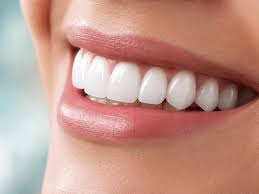

Karaca Dental Diş Laboratuvarı

2003 yılından beri diş hekimliğinde en son dijital teknolojileri ve üstün el işçiliğini bir araya getiriyoruz. Güvenilir süreç yönetimi, yüksek malzeme kalitesi ve zamanında teslimat ilkelerimizle klinikleriniz için kusursuz diş protezleri üretiyoruz.
🛠️ Dijital ve Geleneksel Üretim Çözümlerimiz
💎 Zirkonyum Diş

Yüksek biyo-uyumluluk ve doğal ışık geçirgenliği sunan zirkonyum restorasyonlarımızla estetik beklentileri en üst düzeyde karşılıyoruz.
✨ Cam Seramik

Özellikle ön bölge estetiğinde kusursuz renk geçişleri sağlayan, dayanıklı ve tam seramik (Empress/E.max) altyapı çözümleri.
🔩 Ti-Bar Custom Abutment

İmplant üstü protezlerde kişiye özel üretilen titanyum barlar ve dayanaklar sayesinde mükemmel diş eti uyumu ve uzun ömür.
🦷 Porselen Lamine Veneer

Minimum diş preparasyonu ile maksimum estetik sağlayan, ön grup estetik gülüş tasarımlarının vazgeçilmezi porselen yapraklar.
🏗️ Hibrit ve Akrilik Protezler

Çoklu implant eksikliklerinde kemik kaybını tolere eden, hem estetik hem de yüksek çiğneme kuvvetine dayanıklı hibrit sistemler.
🔥 Metal Destekli Porselen

Geleneksel metal destekli altyapıların modern laboratuvar işçiliğiyle birleştiği, yüksek dayanımlı kuron ve köprü restorasyonları.